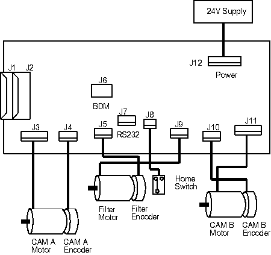

Operating Documentation
Direction 5193755-800, Rev# 8
BrightSpeed (Ltd. Access) Service Methods - Adv
Operating Documentation |
| Required Persons | Preliminary Reqs | Procedure | Finalization |
|---|---|---|---|
| 1 |
| Last Revised: | March 30, 2004 |
| Item | Qty | Effectivity | Part# | Manufacturer | |
|---|---|---|---|---|---|
| ESD Kit | 1 | - | - | - | |
| 3 mm Hex key | 1 | - | - | - | |
| Phillips #2 screwdriver | 1 | - | - | - | |
| Item | Qty | Effectivity | Part# | Manufacturer | |
|---|---|---|---|---|---|
| Collimator Control Board | 1 | - | - | - | |
| NOTE: | Before beginning this procedure, please read the safety information in Equipment Service - Gantry |
| The CCB is static sensitive. Please follow proper static handling procedures. | |
Remove the gantry covers:
Side cover
Top cover
Front cover
Turn OFF all 3 switches (Axial Drive, HVDC, 120 VAC) on the STC backplane.
| CRUSH HAZARD. | |
| UNEXPECTED GANTRY ROTATION CAN CAUSE SERIOUS INJURY. | |
| Never service the gantry with the axial drive enabled. Use the gantry rotation lock to lock out gantry rotation. See safety menu of Service Document gui for appropriate procedures. |
Position the gantry with the XRT at 6 o'clock.
Remove the top cover from the Collimator by removing the five pan head M4 mounting screws that have spring washers.
| NOTE: | Refer to Illustration 1 for connections in the following steps. |
Illustration 1: Collimator Control Board (CCB) Replacement

Disconnect the power cable at connector J12, on the lower side on the Collimator.
Disconnect the two 15 pin D CAN bus connections, J1 and J2, on the upper side of the Collimator.
Remove the four CAN bus connection jackscrews with flat washers & lock washers.
Disconnect the CAM A (J4) & B (J10) encoder cables.
Disconnect all of the remaining cables as shown in Illustration 1.
Remove the six pan head M4 mounting screws.
Remove the replacement CCB from it's shipping container.
Place the new CCB on the Collimator.
Place the old CCB in the shipping container.
Install the six pan head screws loosely to hold board in place.
Install & tighten the four CAN bus connection jackscrews.
Tighten the six pan head screws.
Re-connect the power cable at connector J12, on the Collimator lower end.
Re-connect the two 15 pin D CAN bus connections, J1 and J2, on the upper side of the Collimator.
Re-connect the CAM A (J4) & B (J10) encoder cables.
Re-connect the remaining cables as shown in the illustration.
Enter replacement procedures software menu.
Enter Collimator.
Access Flash Download Tool and follow the procedure to flash the characterization file onto the CCB (see Flash Download Tool).
| NOTE: | CCB PWA is static sensitive and is to be loaded with Collimator characterization file specific to frame assembly and linked to the manufacturer’s serial number. |
Replace the top cover of the Collimator using the five pan head mounting screws with spring washers and tighten.
Perform Characterization Software Check procedure.
Perform Collimator Calibration procedure.